작전명 스낵 볼트
폰 두 대로 함께 푸는 3D 금고 침투 게임이에요. 아이 폰은 현장 요원, 부모 폰은 본부가 되어 말로만 도와요. 금고를 열면 부모 폰에 진짜 보물(간식)을 찾는 방법이 나와요.
- 누가아이 1명 + 부모 1명 (10~12세 권장)
- 부모 준비10분쯤
- 놀이 시간12~18분쯤 (보통 난이도 제한 시간 15분)
- 준비물폰 2대, 간식 넣은 보물상자, 쪽지와 펜
1부모 준비
부모 폰으로 작전을 만들고, 간식과 쪽지를 숨긴 뒤, 아이 폰으로 작전을 넘겨요. 부모 폰 화면은 아이에게 보여 주지 마세요.
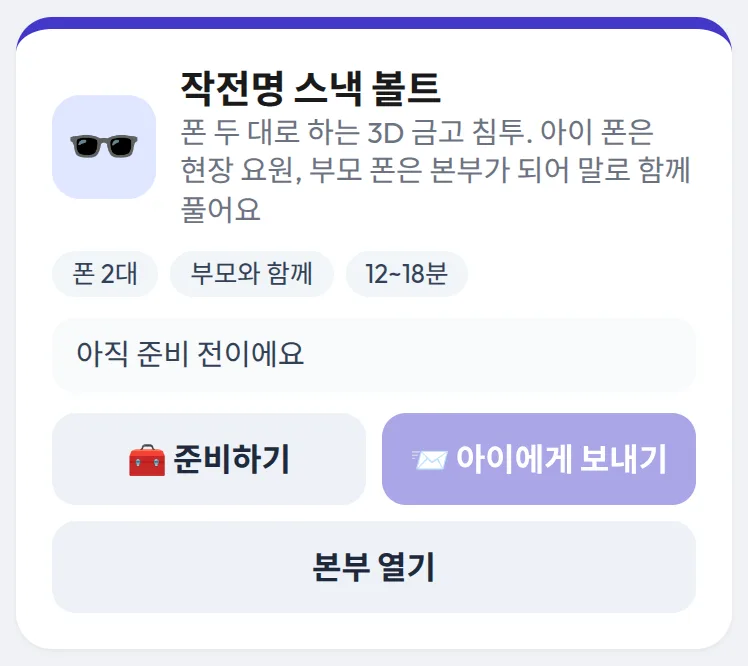
1대시보드에서 시작하기
부모 폰에서 부모 대시보드를 열고 작전명 스낵 볼트 카드의 🧰 준비하기를 눌러요. 작전 설정 화면이 열려요.
준비를 마치면 카드에 "준비 끝 · 작전 코드 …"가 나오고 📨 아이에게 보내기를 누를 수 있게 돼요. 본부 열기는 게임 중에 부모가 볼 본부 콘솔을 다시 열 때 써요.
💡 게임 첫 화면에서 본부 오퍼레이터 (부모)를 눌러도 같은 설정 화면이 열려요.
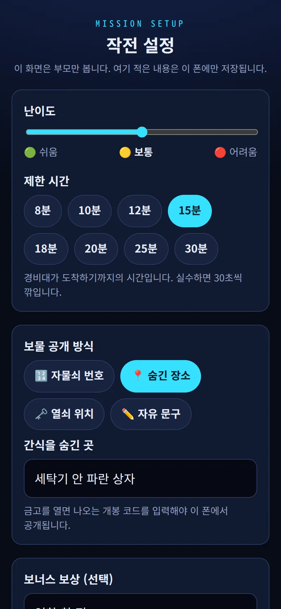
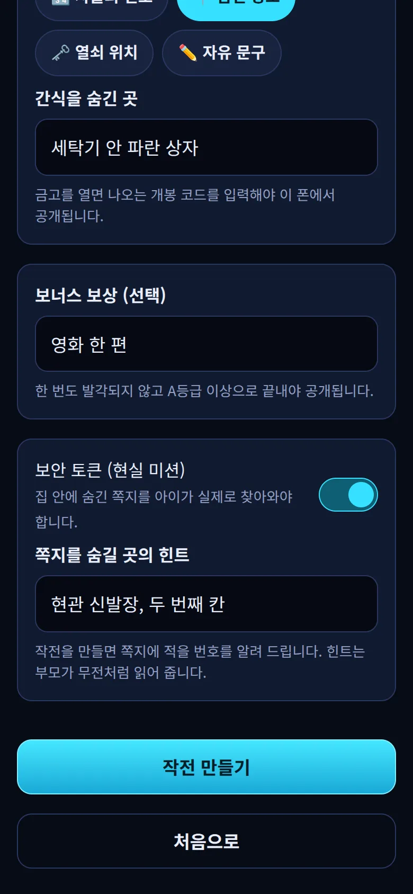
2작전 설정
- 난이도: 막대를 밀어 🟢 쉬움 · 🟡 보통 · 🔴 어려움을 골라요. 제한 시간이 저절로 20분 · 15분 · 12분으로 맞춰지고, 아래 칩(8분~30분)으로 바꿀 수 있어요.
- 보물 공개 방식: 🔢 자물쇠 번호 📍 숨긴 장소 🗝️ 열쇠 위치 ✏️ 자유 문구 중 하나를 고르고 내용을 적어요. 예: 숨긴 장소 → "세탁기 안 파란 상자".
- 보너스 보상 (선택): 한 번도 발각되지 않고 A등급 이상일 때만 공개돼요. 예: "영화 한 편".
- 보안 토큰 (현실 미션): 켜면 아이가 집 안에 숨긴 쪽지를 실제로 찾아와야 하는 단계가 생겨요. 쪽지를 숨길 곳의 힌트를 적어요. 게임 중에 부모가 읽어 줄 말이에요.
다 적었으면 작전 만들기를 눌러요.
💡 보물 내용과 힌트는 부모 폰에만 저장돼요. 아이 폰으로 넘어가는 작전 코드에는 들어 있지 않아서 아이가 미리 알 수 없어요.
⚠️ 전에 만든 작전이 있으면 "새 작전을 만들까요?"가 떠요. 새로 만들기를 누르면 이전 작전의 보물 정보는 지워져요.
3집 안 준비 (몸으로 할 일)
- 🍪간식을 보물상자에 넣고, 설정에 적은 대로 숨기거나 잠가요. 아이가 놀이 중에 우연히 보지 못할 곳이 좋아요.
- 📝보안 토큰을 켰다면 본부 콘솔의 2. 시작 전 준비에 나온 네 자리 번호(아래 4번 그림에서는 7005)를 쪽지에 적어 힌트에 맞는 곳에 숨겨요.
- 🎁보너스 보상을 적었다면 따로 준비해 둬요.
- 📱두 폰을 충전하고, 화면 자동 꺼짐을 2분 이상으로 늘리고, 소리를 켜요(아이폰은 무음 스위치도). 두 폰은 서로 연결하지 않아요. 각자 인터넷만 되면 돼요.
- 🪑서로 화면이 안 보이게 앉을 자리를 정해요. 등을 맞대고 앉거나 식탁 양쪽에 앉으면 좋아요. 화면을 보여 주면 너무 쉬워져요.
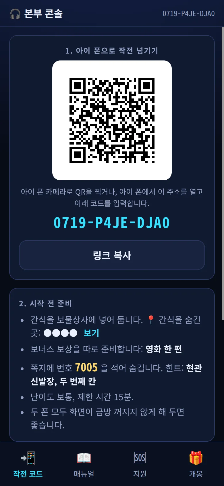
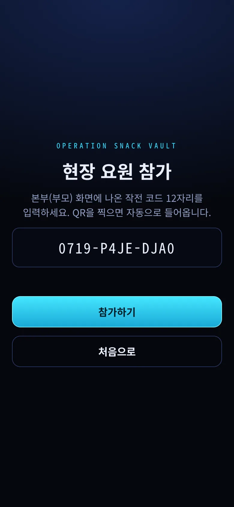
4아이 폰으로 작전 넘기기
작전 만들기를 누르면 부모 폰에 본부 콘솔이 열려요. 첫 탭 📲 작전 코드에 QR과 12자리 작전 코드가 있어요.
- 아이 폰 카메라로 QR을 찍으면 바로 게임이 열려요.
- QR이 안 되면 아이 폰에서 게임 첫 화면 → 현장 요원 (아이) → 코드 12자리 입력 → 참가하기.
- 메시지로 보내려면 이 화면의 링크 복사(폰에 따라 공유도 보여요)나 부모 대시보드의 📨 아이에게 보내기를 써요. 같은 링크예요.
아래 2. 시작 전 준비에는 쪽지 번호와 힌트, 난이도, 제한 시간이 정리돼 있어요. 보물 내용과 쪽지 번호는 ●●●●로 가려져 있고 보기를 눌러야 보여요.
💡 쪽지 번호를 보고 적은 뒤에는 숨기기를 눌러 두세요. 아이가 QR을 찍으러 와도 보이지 않아요.
5난이도별로 달라지는 것
처음이라면 쉬움이나 보통으로 시작해 보세요. 숫자는 게임 안 설정값 그대로예요.
| 무엇 | 쉬움 / 보통 / 어려움 |
|---|---|
| 제한 시간 | 20분 / 15분 / 12분 |
| 정문 게이트 문양 사전 | 12개 / 16개 / 20개 |
| 문양 색 규칙 | 없음 / 3가지 / 5가지 |
| 문양이 바뀌는 시간 | 120초 / 90초 / 75초 |
| 환기 덕트 크기 | 4×4칸 / 5×5칸 / 6×6칸 |
| 감지선 | 2개 / 3개 / 5개 |
| 스프레이 | 3번 / 3번 / 2번 |
| 전력실 동시에 켜는 스위치 | 제한 없음 / 4개 / 3개 |
| 금고 명판 종류 | 2개 / 3개 / 4개 |
2게임 진행
아이는 3D 시설 안에서 보고 말하고, 부모는 듣고 찾아서 알려 줘요. 부모는 아이 폰을 만지거나 들여다보지 않아요. 어느 구역이든 아래 순서가 되풀이돼요.
★부모가 매번 하는 일
- 🔢아이가 화면 오른쪽 위 주파수 네 자리를 불러 주면, 부모 폰 아래 📖 매뉴얼 탭의 키패드에 입력해요. 그 구역의 매뉴얼이 열려요.
- 📻매뉴얼 맨 위 "소리 내어 읽어 주세요" 상자의 대사를 무전처럼 읽어 줘요.
- 🔎아이가 설명하는 것을 매뉴얼의 표·사전·설계도에서 찾아, 숫자나 할 일을 말로 알려 줘요.
- 🔁새 구역에 들어가면 아이 화면에 "새 주파수"가 크게 떠요. 매뉴얼 맨 위 주파수 바꾸기를 누르고 새 숫자를 넣어요. 매뉴얼 맨 위에 구역 이름과 주파수가 나오니, 아이 화면 숫자와 같은지 확인해요.
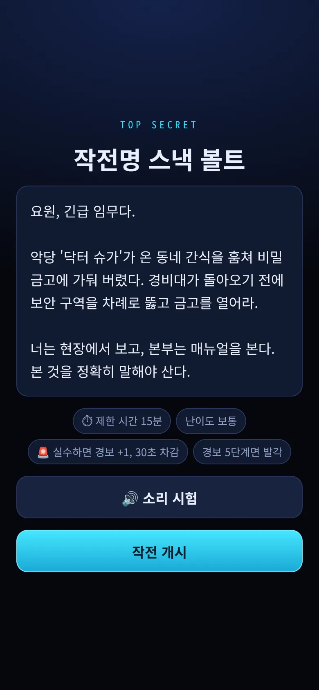
1브리핑과 작전 개시
QR이나 코드로 들어오면 아이 폰에 이야기가 한 글자씩 나와요. 악당 '닥터 슈가'가 훔쳐 간 간식을 되찾으러 금고에 들어가는 이야기예요.
제한 시간과 규칙이 아래에 적혀 있어요. 🔊 소리 시험으로 소리가 나는지 확인한 뒤 아이가 작전 개시를 눌러요.
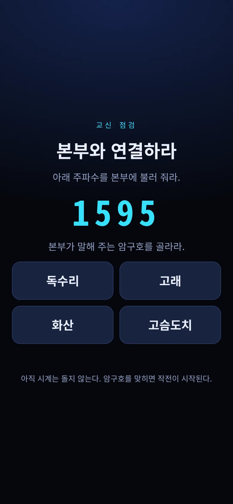
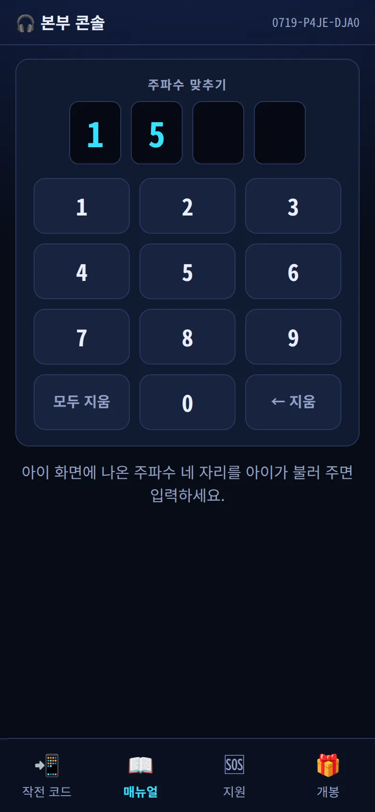
2교신 점검 (연습 단계)
아이 화면에 주파수(예: 1595)와 암구호 보기 네 개가 나와요. 아직 시계는 돌지 않아요.
- 아이가 주파수를 불러 줘요.
- 부모는 📖 매뉴얼 탭의 주파수 맞추기에 네 자리를 넣어요. 잘못 넣으면 ← 지움으로 고쳐요.
- 교신 점검 매뉴얼이 열리면 대사를 읽고, 크게 나온 암구호(예: 고슴도치)를 말해 줘요.
- 아이가 같은 낱말을 누르면 작전이 시작되고 시계가 돌아요.
💡 숫자를 주고받는 연습이에요. 틀리게 골라도 벌점 없이 보기만 바뀌어요.
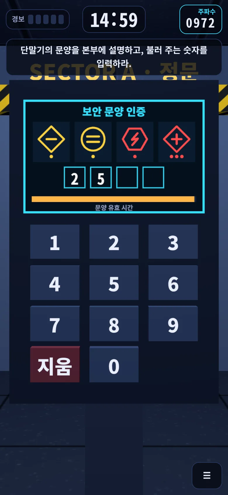
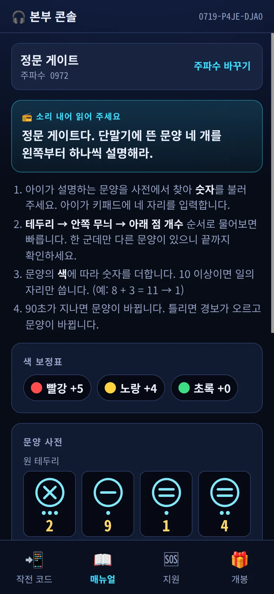
3정문 게이트: 문양 해독
아이 화면 단말기에 이름 없는 문양 네 개가 떠요. 아이가 왼쪽부터 하나씩 생김새를 말하면, 부모는 문양 사전에서 같은 문양을 찾아 숫자를 불러 줘요. 아이가 3D 키패드로 네 자리를 눌러요.
- 테두리 → 안쪽 무늬 → 아래 점 개수 순서로 물어보면 빨라요. 한 군데만 다른 비슷한 문양이 섞여 있어요.
- 보통 이상에서는 색 보정표대로 문양 색에 따라 숫자를 더해요. 10이 넘으면 일의 자리만 써요.
- 예: 둘째 문양 "노란 원 안에 가로줄 둘, 아래 점 하나" → 사전 원 테두리에서 1, 노랑 +4 → 5.
문양 유효 시간 막대(보통 90초)가 다 줄면 벌점 없이 문양만 바뀌어요. 다시 설명하면 돼요.
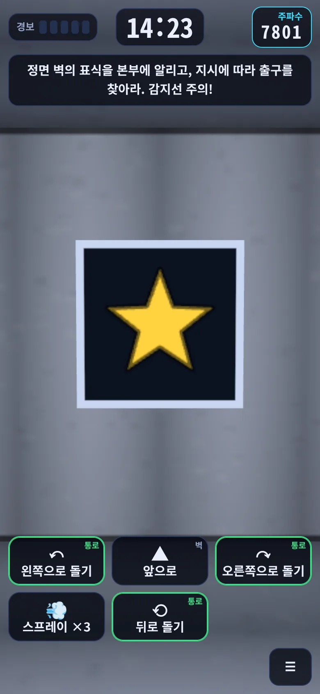
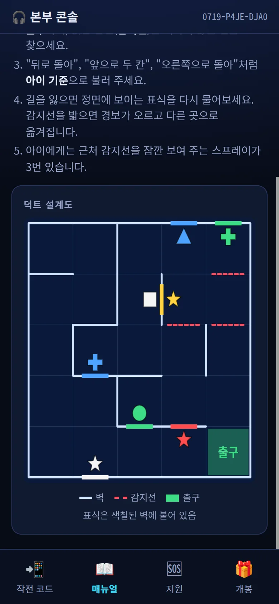
4환기 덕트: 길 안내
아이는 좁은 덕트 안에서 정면 벽의 표식(예: 노란 별)을 말해요. 부모는 설계도에서 같은 표식을 찾아요. 아이는 그 표식이 붙은 색칠된 벽을 정면으로 보고 있어요.
- 초록 출구까지, 붉은 점선 감지선을 지나지 않는 길을 찾아요.
- "오른쪽으로 돌아", "앞으로 두 칸"처럼 아이 기준으로 불러 줘요. 아이는 ↶ 왼쪽으로 돌기 ▲ 앞으로 ↷ 오른쪽으로 돌기 ⟲ 뒤로 돌기로 움직여요. 버튼 귀퉁이에 "통로"나 "벽"이 보여요.
- 감지선은 아이 화면에 보이지 않아요. 💨 스프레이(보통 3번)를 뿌리면 근처 감지선이 잠깐 보여요.
- 감지선에 걸리면 경보가 오르고 다른 곳으로 옮겨져요. 정면의 표식을 다시 물어보세요.
💡 방향이 헷갈리면 부모 폰을 아이가 보는 방향으로 돌려 들고 길을 따라가 보세요.
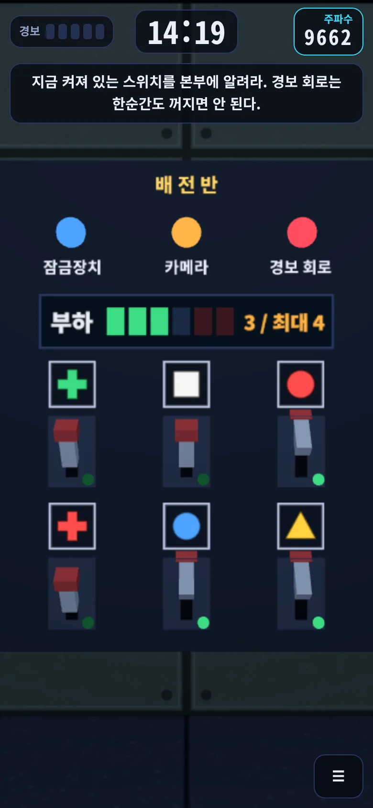
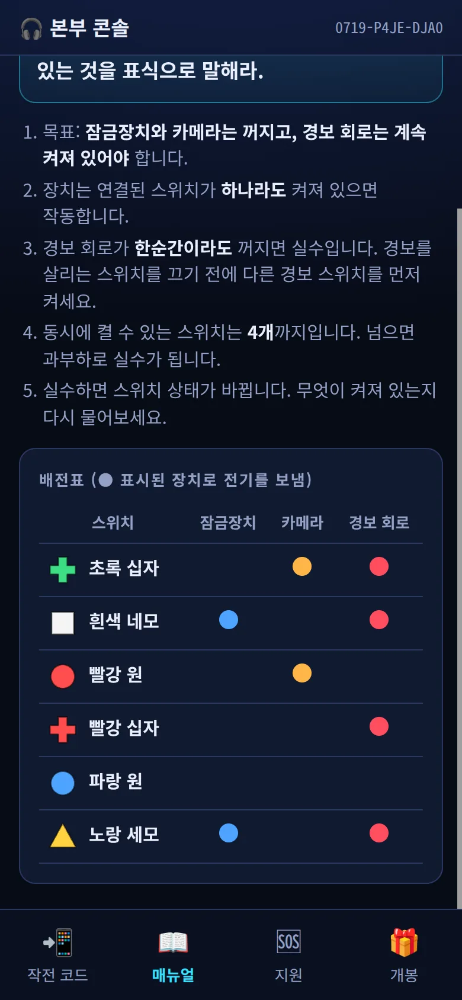
5전력실: 순서가 중요한 스위치
배전반에 표식이 붙은 레버 스위치 6개가 있어요. 레버 옆 초록 불이 켜져 있으면 켜진 스위치예요. 아이가 지금 켜진 스위치를 표식으로 말해요.
- 목표: 잠금장치와 카메라는 끄고, 경보 회로는 계속 켜 두기. 장치는 연결된 스위치가 하나라도 켜져 있으면 작동해요.
- 경보 회로가 한순간이라도 꺼지면 실수예요. 경보를 살리는 스위치를 끄기 전에 다른 경보 스위치를 먼저 켜요.
- 보통에서는 스위치를 동시에 4개까지만 켤 수 있어요(부하 계기). 넘으면 과부하로 실수예요.
예: 그림에서 켜진 것은 빨강 원 · 파랑 원 · 노랑 세모예요. 노랑 세모는 잠금장치와 경보 회로를 함께 살리고 있어서 바로 끄면 경보가 꺼져요. 빨강 십자를 먼저 켜고 → 노랑 세모 끄기 → 빨강 원 끄기.
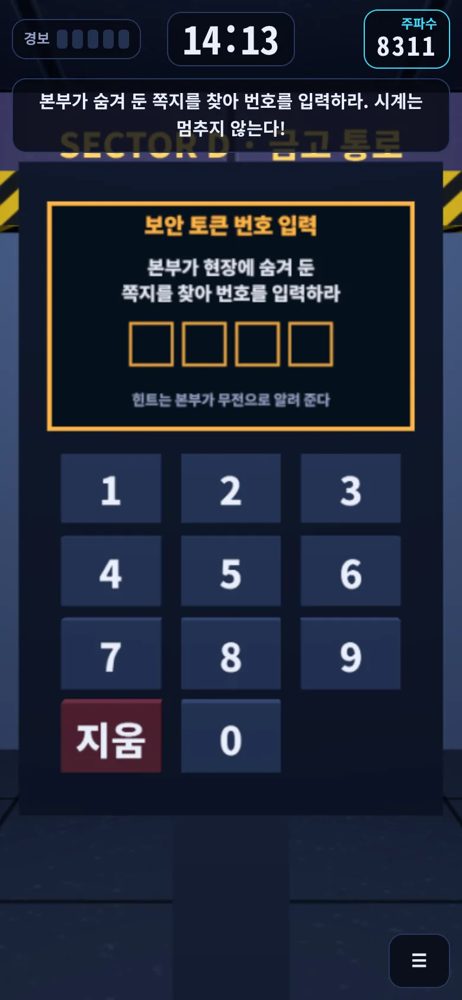
6보안 토큰: 진짜 쪽지 찾기 (켰을 때만)
설정에서 보안 토큰을 켰을 때만 나와요. 부모 매뉴얼의 대사 안에 부모가 적어 둔 힌트가 들어 있어요(예: "현관 신발장, 두 번째 칸"). 그대로 읽어 주세요.
- 아이가 실제로 쪽지를 찾아와서 적힌 번호를 입력해요. 번호는 알려 주지 마세요.
- 찾는 동안에도 시계는 계속 가요. 틀린 번호를 넣으면 경보가 올라요.
- 부모 매뉴얼 아래 보기를 누르면 쪽지에 적은 번호를 확인할 수 있어요.
💡 아이 폰 화면이 꺼지면 시계가 멈추고 "잠시 멈춤" 화면이 떠요. 돌아와서 계속하기를 누르면 이어져요.
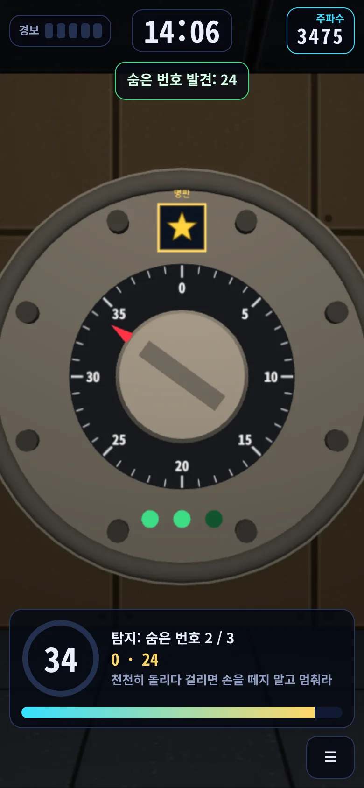
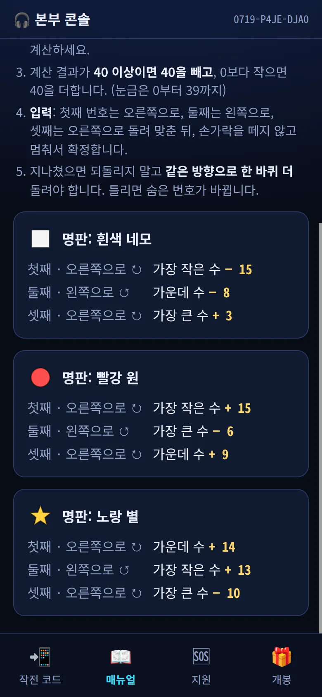
7금고실: 다이얼 열기
찾기 — 아이가 다이얼 위에 손가락을 대고 빙 돌려요. 아주 천천히 돌리다 숨은 번호에 닿으면 딸깍 소리, 진동, 아래 막대가 번쩍해요. 손가락을 떼지 말고 1초쯤 멈춰 있으면 숫자 둘레 고리가 차며 "숨은 번호 발견"이 떠요. 세 개를 찾아요.
계산 — 아이가 찾은 번호 세 개와 다이얼 위 명판 그림을 알려 줘요. 부모는 같은 명판 카드를 보고, 번호를 작은 순서로 놓은 뒤 줄마다 더하거나 빼요. 40 이상이면 40을 빼고, 0보다 작으면 40을 더해요.
예: 명판 노랑 별, 찾은 번호 0 · 24 · 34 → 첫째 24 + 14 = 38, 둘째 0 + 13 = 13, 셋째 34 − 10 = 24.
맞추기 — 첫째는 오른쪽으로 ↻, 둘째는 왼쪽으로 ↺, 셋째는 오른쪽으로 ↻ 돌려 숫자에 맞추고 멈춰서 확정해요. 지나쳤으면 되돌리지 말고 같은 방향으로 한 바퀴 더 돌려요. 틀리면 숨은 번호가 바뀌어 처음부터 다시 찾아요.
💡 진동이 안 되는 폰(아이폰 등)에서는 소리와 막대로 찾아요. 이 구역은 소리가 중요해요.
!실수와 발각
시계는 실제로 줄어들고, 실수하면 경보가 올라요. 그래도 간식은 잃지 않아요.
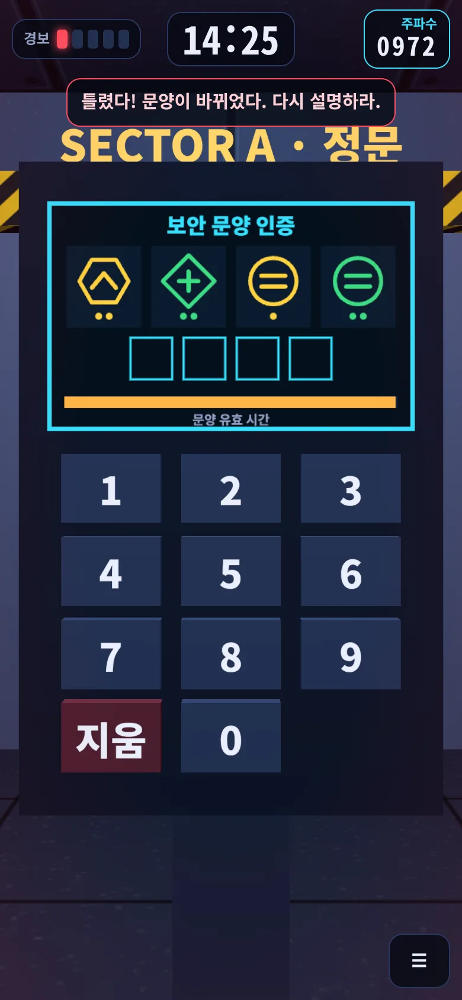
1실수하면, 발각되면
- 실수(틀린 숫자, 감지선, 경보 회로 끊김, 과부하, 다이얼 틀림): 화면 왼쪽 위 경보가 한 칸 오르고 30초가 깎여요. 문양·스위치 상태·출발 위치·숨은 번호가 다시 섞이지만 매뉴얼은 그대로예요. 아이에게 다시 물어보면 돼요.
- 구역을 통과하면 경보가 한 칸 내려가요. 경보가 3칸 이상이면 화면 가장자리가 붉게 뛰어요. 마지막 1분에는 시계가 빨갛게 깜빡여요.
- 발각: 시간이 0이 되거나 경보가 5칸이 되면 발각돼요. 아이가 재침투를 누르면 같은 구역을 새 주파수로 다시 시작해요. 매뉴얼 내용도 바뀌니 부모는 주파수 바꾸기로 새 숫자를 넣어요.
- 발각 뒤에는 경보 2칸에서 시작하고, 남은 시간은 최소 2분 30초가 보장돼요. 보너스 보상만 사라져요.
💡 구역을 통과한 "구역 돌파" 화면과 아이가 ☰ 메뉴를 연 동안에는 시계가 멈춰요. 아이가 다음 구역으로를 누르면 다시 돌아요.
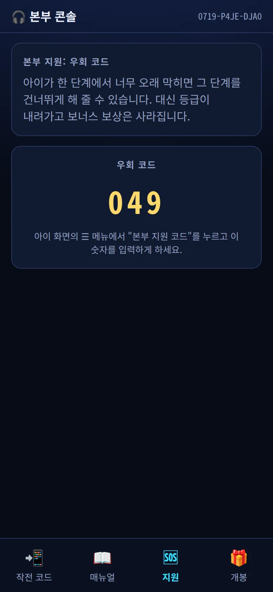
2너무 오래 막히면: 우회 코드
한 구역에서 너무 오래 막히면 부모가 그 구역을 건너뛰게 해 줄 수 있어요. 대신 등급이 내려가고 보너스 보상은 사라져요.
- 먼저 📖 매뉴얼 탭이 지금 구역 주파수에 맞춰져 있는지 확인해요.
- 🆘 지원 탭 → 우회 코드 발급 → "이 단계를 건너뛸까요?"에서 발급. 세 자리 숫자가 나와요.
- 아이는 화면 오른쪽 아래 ☰ → 🆘 본부 지원 코드를 누르고 그 숫자를 넣어요. "우회로로 통과했다"가 뜨며 다음 구역으로 가요.
💡 막혔을 때 먼저 할 일: 주파수가 맞는지(매뉴얼 맨 위 숫자 = 아이 화면 오른쪽 위 숫자) 확인하고, 아이에게 한 가지씩 천천히 다시 물어보세요.
3끝난 뒤
금고가 열리면 아이 화면의 개봉 코드로 부모 폰에서 보물이 공개돼요.
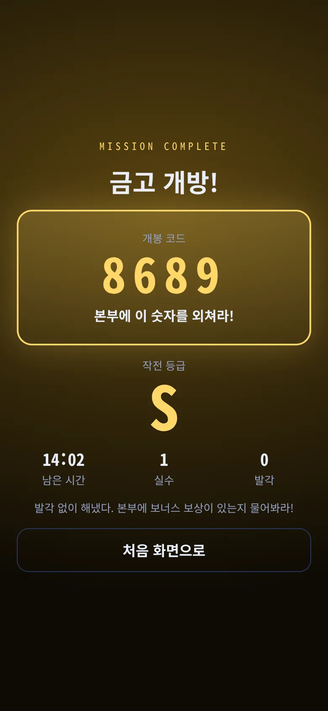
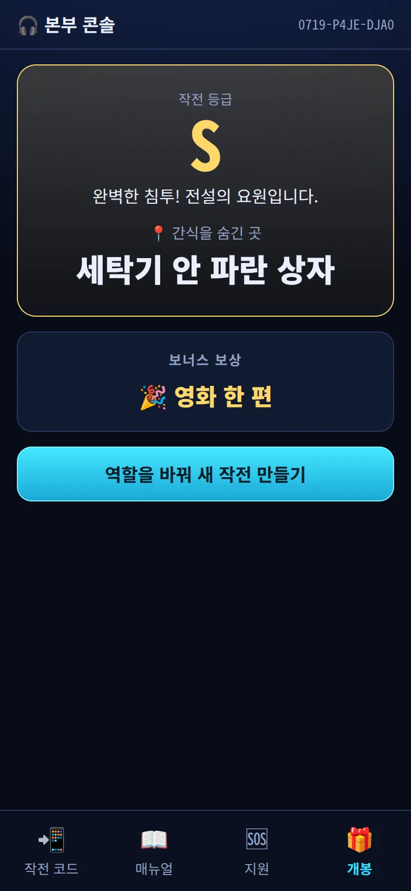
1개봉 코드와 보물 공개
아이 화면에 금고 개방!과 개봉 코드 네 자리(예: 8689), 작전 등급, 남은 시간 · 실수 · 발각 횟수가 나와요. 아이가 코드를 외쳐 줘요.
부모는 🎁 개봉 탭에 네 자리를 넣어요. 등급과 함께 설정에 적은 보물 내용이 크게 나오고, 조건을 채웠다면 🎉 보너스 보상도 나와요. 이제 아이와 함께 진짜 보물상자를 찾으러 가요.
| 등급 | 조건 |
|---|---|
| S | 발각·우회 없이, 실수 1번 이하, 제한 시간의 30% 이상 남김 → 보너스 받음 |
| A | 발각·우회 없음 → 보너스 받음 |
| B | 발각 1번 이하 (우회 코드를 썼을 때 포함) → 보너스 없음 |
| C | 발각 2번 이상 → 보너스 없음 |
2기록과 다음 작전
- 끝낸 작전의 날짜 · 등급 · 남은 시간 · 실수 · 발각은 아이 폰에 남아요. 아이 폰에서 게임 첫 화면을 열면 "이 폰의 지난 작전"에 나와요.
- 다음 판은 개봉 화면 아래 역할을 바꿔 새 작전 만들기나 부모 대시보드의 🧰 다시 준비하기로 새로 만들어요. 작전 코드가 바뀌면 문양 · 미로 · 배전표 · 금고 번호가 모두 새로 만들어져요.
- 새 작전을 만들면 보물 내용과 힌트는 다시 적어야 해요(지난 답이 남지 않게).
?막혔을 때
"주파수가 맞지 않습니다"가 떠요
아이에게 화면 오른쪽 위 숫자를 한 자리씩 다시 불러 달라고 하세요. 계속 안 되면 두 폰 모두 새로고침하세요. 진행은 저장돼 있어요.
매뉴얼대로 했는데 자꾸 틀려요
매뉴얼 맨 위의 구역 이름과 "주파수" 숫자가 아이 화면과 같은지 보세요. 숫자를 잘못 넣으면 아주 드물게 다른 매뉴얼이 열릴 수 있어요. 다르면 주파수 바꾸기로 다시 넣어요. 발각된 뒤에는 주파수가 바뀌니 꼭 새로 넣어요.
아이 폰을 닫았거나 새로고침했어요
같은 링크를 다시 열면 "진행 중인 작전이 있다"가 떠요. 이어하기를 누르면 하던 구역의 처음부터 다시 하고, 남은 시간은 그대로예요. 처음부터 다시를 누르면 시간과 경보까지 모두 처음으로 돌아가요.
부모 폰에서 본부 콘솔을 닫았어요
부모 대시보드의 본부 열기나 게임 첫 화면의 진행 중인 작전 콘솔을 누르세요. 맞춰 둔 주파수도 그대로 남아 있어요.
소리가 안 나요
브리핑 화면의 🔊 소리 시험을 눌러 보세요. 아이폰은 무음 스위치도 확인하세요. 게임 중에는 ☰ 메뉴에서 소리를 켜고 끌 수 있어요.
아이 폰이 꺼지거나 고장 났어요
부모 폰의 🎁 개봉 탭에서 코드 없이 공개하기를 누르세요. 등급 없이 보물 내용만 공개돼요.
3D 화면이 안 나오거나 멈췄어요
"이 기기에서는 3D 화면을 쓸 수 없습니다"가 뜨면 크롬이나 사파리로 다시 열어 보세요. "화면을 복구하는 중..."이 오래 가면 새로고침을 누르세요. 진행은 저장돼 있어요. 폰을 가로로 돌리면 "세로로 돌려 주세요"가 떠요.
아이가 쪽지를 못 찾아요
힌트를 한 번 더 읽어 주거나 말로 조금 더 알려 주세요. 시계는 계속 가니 너무 오래 걸리면 지원 탭의 우회 코드를 쓸 수 있어요.
아이가 혼자 할 수 있나요?
아니요. 아이 폰에는 답이 없고, 부모 매뉴얼에는 아이가 보는 장면이 없어요. 둘이 말로 주고받아야만 풀려요. 부모 한 명이 매뉴얼을 맡아 주세요.